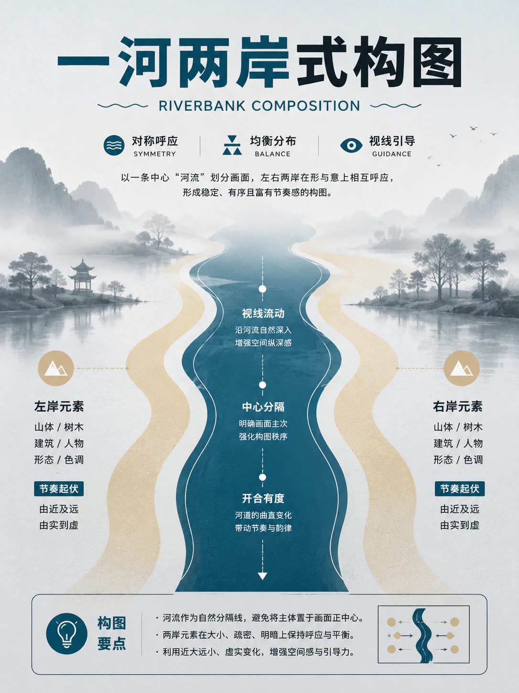

单一绝对主角的特写
人物近景肖像、单件珠宝海报需要把目光牢牢钉在正中唯一的焦点上；硬在中间划开一条河道，会把主角劈成两半或逼退到边角。
以一条中心“河流”划分画面，左右两岸在形与意上相互呼应，形成稳定、有序且富有节奏感的构图。
横拖拨弯河道 · 点红圈移堵物 · 点岸位换景
重阁压在河道正中，把「分隔线」堵死了
重阁压在河道正中，把「分隔线」堵死了
海报第一条要点就是「避免将主体置于画面正中心」。河心一旦塞进体量最重的建筑，水流和视线刚进画面就迎面撞停，左右两岸也失去对话的通道。
试着改一步：直接点击画布河心带虚线框的楼阁，把它移去岸边，先把中间水脉让出来。
Sinuous Flow & Visual Breathing
原海报把河流的作用拆成两句：「视线流动：沿河流自然深入，增强空间纵深感」与「开合有度：河道的曲直变化，带动节奏与韵律」。很多新手画河或排双栏时，最容易随手拉一条上下笔直、等宽的中缝，结果整张画面像被一刀劈成两半。
人眼沿着高对比度的边界走得飞快。直线无阻挡，目光不到半秒就冲出画框顶边；柔和的微弯与近宽远窄则像给视线安了温柔的弯道——每次转折都让眼睛稍作停顿，顺势扫一眼岸边的亭阁、树丛或标题，再继续往深处推进。
经验参考带：前景河口宽约占画幅 16%–34%、远端自然收窄，并留出轻柔的 S 形摆动，通常既能隔开两岸，又不会把岸幅挤扁。
Dynamic Echo Beyond Literal Symmetry
原海报底栏有一条非常实在的提醒：「两岸元素在大小、疏密、明暗上保持呼应与平衡」。不过海报上方把第一个关键词译作英文「SYMMETRY」（严格对称），这里值得温和补一句——说多了一点：一河两岸很少要求左右像照镜子一样完全复刻。
鲁道夫·阿恩海姆在 1954 年初版、1974 年修订的《艺术与视知觉》（加州大学出版社）首章里，把画面的平衡比作杠杆：深色、实心、轮廓锐利、体量集中的物件（比如左岸临水亭阁）视觉重量更沉；而浅淡、疏松、横向铺开的景物（比如右岸成片疏林配一叶轻舟），只要舒展得够宽、离支点够远，同样能稳稳压平天平。
左右「形异而重等」，既有安稳秩序，又保留了主次与观看的新鲜感，这正是中国画讲的「宾主顾盼」。
From Yuan Literati Scrolls to Modern Visual Channels
「一河两岸」在传统画史和当代构图教学里，其实有两条互相滋养的脉络：画史里多指元代文人画「上下三段、隔水遥望」的立轴范式，而现代平面与摄影构图把「一河」竖直拉通，变成划分左右两岸的纵深通道。
郭熙论画、其子郭思编纂（河南许光凝政和七年作序），提出「自近山而望远山，谓之平远」，为平缓水岸遥望远山奠定了空间观看方式。
纸本水墨手卷（纵 24.9 厘米、横 120.5 厘米），以渴笔松秀写江南水乡沙丘低峦，把五代董源的平远江南山水推入元代文人画新境。
倪瓒先后作《六君子图轴》（1345，上海博物馆藏）、《渔庄秋霁图轴》（1355，上海博物馆藏）、《江渚风林图轴》（1363，美国大都会艺术博物馆藏）与晚年名迹《容膝斋图轴》（1372 年作、1374 年补题，台北国立故宫博物院藏）。近景坡石疏树空亭、中景大块留白水面、远景低缓折带皴山影，成为画史上最经典的「一河两岸」。
清初笪重光在《画筌》（康熙年间刊行）写下「虚实相生，无画处皆成妙境」；乾隆四十六年（1781），沈宗骞在《芥舟学画编》进一步提出大段落与一树一石皆须「开合之中，复有开合」，正与本页「开合有度」遥相呼应。
传统立轴里水面横隔上下，强调清旷萧疏；到了现代风景摄影、电影远景和平面海报里，河道、公路、桥廊或杂志中缝顺着纵深直入画面，既保留「以虚隔实」的传统心法，又叠加上近宽远窄的线性引导。
无论上下隔水还是左右分岸，精髓都一样——绝不把整张纸塞满，而是刻意留出一条不被主体压死的空白通道，让实景靠着这条虚脉互相映照、彼此喘息。
现代版式中的双栏对比、左右图文跨页、分屏产品页，本质上都是在纸面和屏幕里造一条隐形河流：中缝定规矩，两翼比分量。
Paths, Gutters & Split Grids as Rivers
「一河两岸」并不只用来画真山真水。任何能自然隔开左右两翼、又把视线往深处送的空白带——林间石径、书页中缝、对比页的时间轴——全都是构图里的「河流」。
When Riverbank Composition Works Against You
一河两岸擅长建立从容、有序、两翼对照的秩序；但也正因如此，遇到下面这四种需求时，硬套它反而会坏事。
人物近景肖像、单件珠宝海报需要把目光牢牢钉在正中唯一的焦点上；硬在中间划开一条河道，会把主角劈成两半或逼退到边角。
左右两岸加上中间河道至少占三段横向空间。在极窄广告条或窄手机卡片里强分左中右，每条岸都会被挤得放不下一行完整文字。
一河两岸天然偏安定、舒缓。极限运动海报、紧迫警报弹窗或爆发力镜头更需要大斜线与失衡张力，两岸一配平反而泄了气势。
双岸天然适合两组事物对照或主副呼应。如果有六个同等重要的商品卡片需要平权陈列，直接用多列网格比硬塞进两岸更利落。
Single-Variable Composition Check
杂志跨页表现「老城与新岸」的对话：画面中央已定好一条近宽远窄的微弯河道，左岸近景放了一座深墨厚重的旧钟楼。下面四幅图只改了右岸与河心的配景，哪一幅既稳住两岸又有流动韵律？
Original Poster & Key Vocabulary
